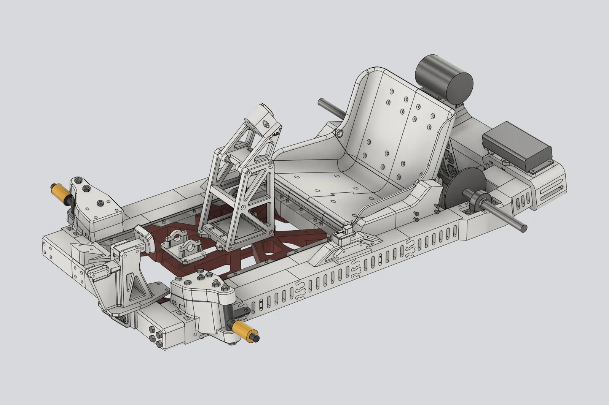
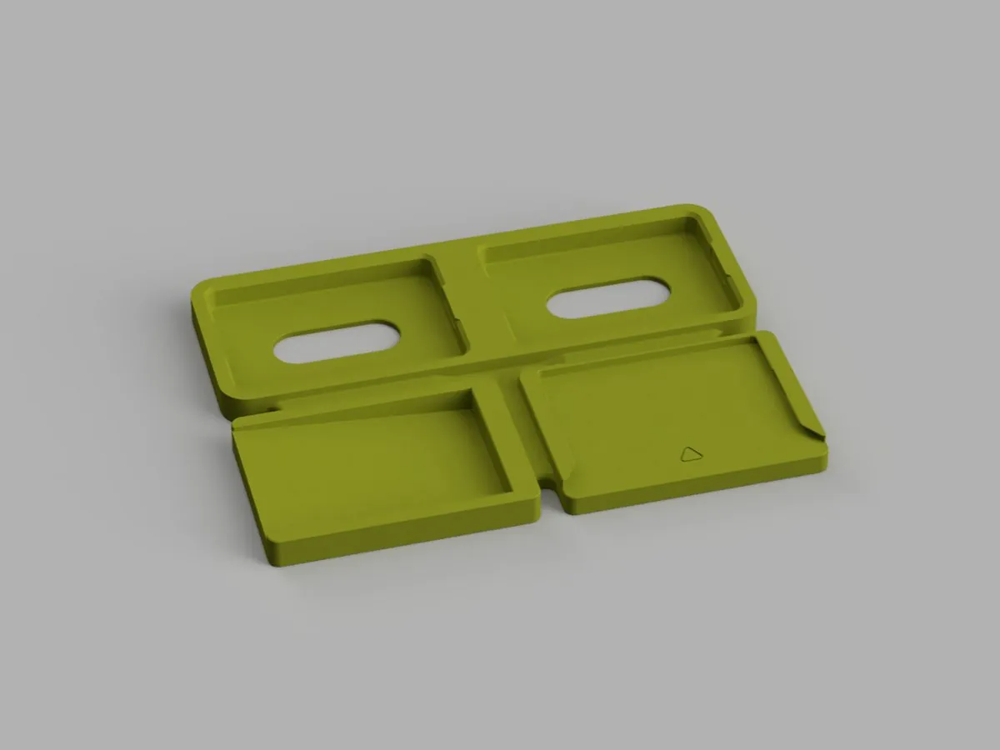
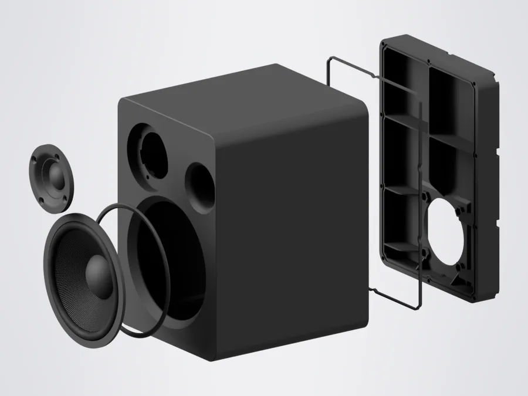
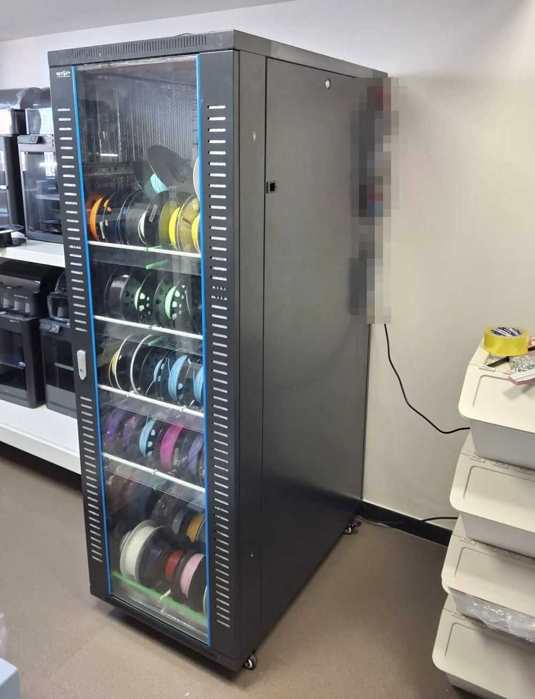
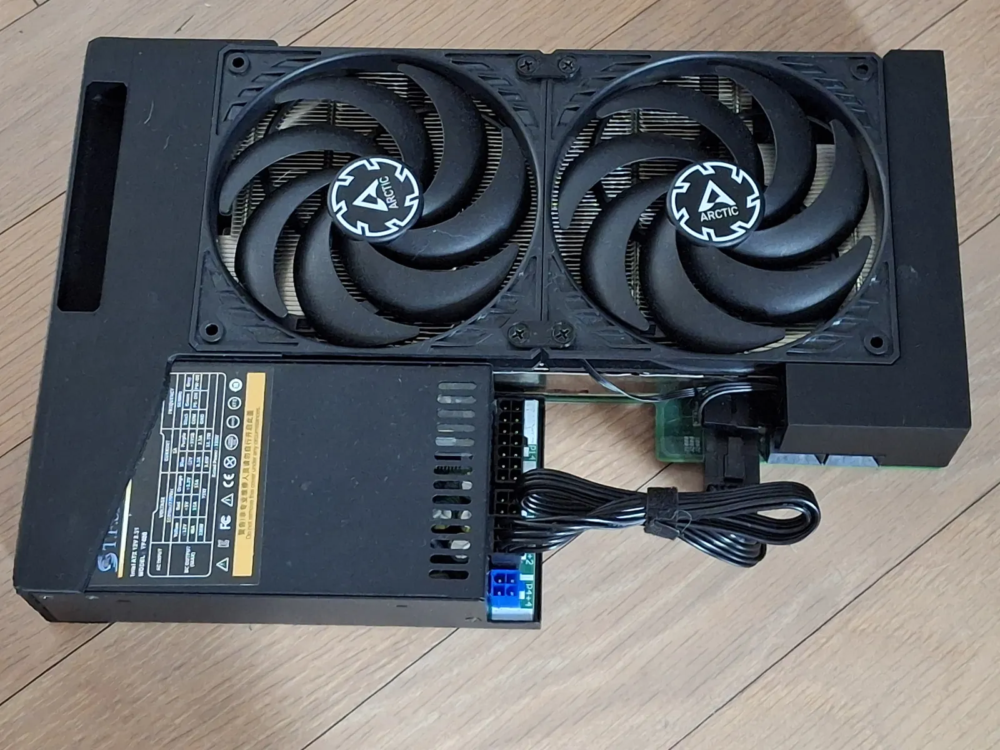
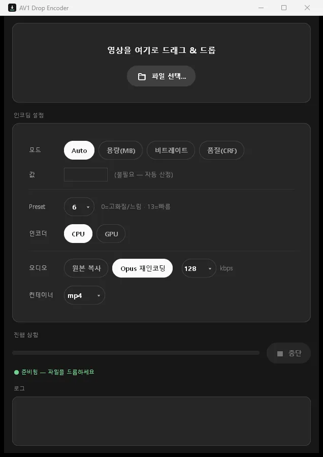
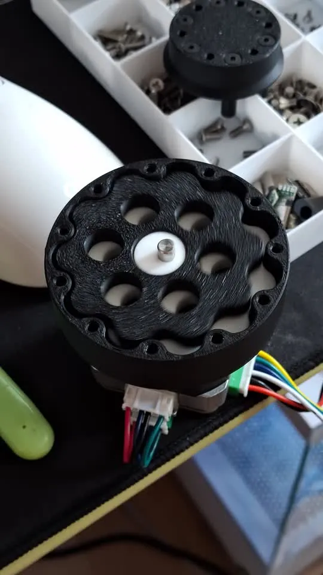

기구 설계 · 전장 · 배터리
전기 카트
프레임 전부를 3D 프린팅으로 만든, 사람이 타는 2000W 전기 카트입니다. 3년 동안 네 번 새로 설계했고, 배터리 팩도 직접 만들었습니다.
2000W모터 출력
1.35kWh직접 만든 배터리 팩
약 94개출력 부품
90kg태워 본 몸무게
하드웨어 메이커 · 기구 설계 · 회로 · 펌웨어 · 제작.사람이 타는 카트를 3D 프린팅으로 만들었고, 의뢰받아 설계한 제품은 지금 판매되고 있습니다. 기구부터 회로, 펌웨어, 배터리까지 직접 만들고 실제로 써 보며 고칩니다.

프레임 전부를 3D 프린팅으로 만든, 사람이 타는 2000W 전기 카트입니다. 3년 동안 네 번 새로 설계했고, 배터리 팩도 직접 만들었습니다.

술두루미 작가님의 의뢰로 "명함 오거나이저 3도"와 "2도"를 디자인하고 설계했습니다. 아이디어만 받아 형태와 구조를 정했고, 생산은 3D 프린팅 외주로 진행했습니다. 지금 판매 중입니다.

21700 셀 1개로 USB-C PD 20W를 내는 보조배터리 기판입니다. Claude Code로 설계 자동화 환경을 만들어 설계 시작 3일 만에 시제품을 주문했고, 검증은 직접 했습니다.

셀 4개를 직렬로 묶은 4S 1P 보조배터리를 3D 프린팅 하우징으로 만들고 있습니다. 버전마다 발열과 내구성 문제를 고치며 첫 버전보다 부피를 약 59% 줄였습니다.

스피커 1개당 약 1.5만 원짜리 드라이버로 만든 2-way 스피커입니다. 출력한 인클로저의 공진과 휨을 잡고, 포트를 계산해 저음을 맞췄습니다. 마지막으로 측정 마이크로 응답을 재서 룸 EQ로 다듬었습니다. 지금까지 8개 버전을 만들었고, 포트형 서브우퍼는 조립만 남았습니다.

기성 랙 캐비닛을 개조해 필라멘트 약 250개를 건조하며 보관하는 서랍형 건조장을 만들었습니다. 제어보드와 펌웨어를 직접 만들었고, 사업장에 설치해 실사용 중입니다.

PS5 칩이 들어간 채굴 보드(BC-250)를 게이밍 PC로 쓰도록 하우징을 만들었습니다. 지인에게 의뢰받은 작업입니다. 가장 신경 쓴 건 두께입니다. 백팩에 넣고 다닐 수 있게 약 44mm로 얇게 만들었고, 120mm 팬도 슬림 팬을 썼습니다. 팬 2개와 소형 파워를 한 몸체에 묶으면서 내구성과 방열도 함께 맞췄습니다.
입대를 앞두고, 친구들과 쓰는 마인크래프트 서버가 제가 없어도 혼자 돌아가게 만들었습니다. 디스코드 봇 하나로 서버를 켜고 끄고, 백업하고, 복구할 수 있습니다. 매일 새벽 5시에는 AI가 서버를 점검해 결과를 디스코드로 보내 줍니다.

메신저 용량 제한에 맞춰 영상을 원하는 크기로 압축하는 Windows 앱입니다. 창에 끌어다 놓으면 끝나고, 실행 파일 하나가 10MB 이하입니다.

감속비 10:1 사이클로이드 감속기입니다. FDM 시제품으로 설계를 검증했고, NEMA17 스텝모터에 폐루프 드라이버(MKS SERVO42C)를 달아 구동했습니다. 로봇팔 연동은 제대 후 이어갑니다.